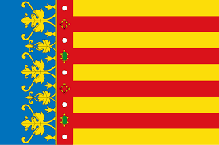

Languages
Effective communication in multicultural environments and international projects

Spanish
Native
English
Advanced (B2)

Valencian
Advanced (B2)
A unique profile combining strategic leadership, technical expertise and innovative vision
My experience managing teams of more than 20 professionals has allowed me to develop a leadership style that combines strategic vision, talent development and exceptional results.
Over 15 years perfecting my technical skills and staying at the forefront of enterprise technologies
JD Edwards solutions architect with experience in complex implementations, performance optimization and custom extensions development.
PRINCE2 certified director with experience in multi-million dollar projects, distributed teams and agile and traditional methodologies.
Proven experience leading teams of more than 20 professionals, with focus on talent development and creating high-performance teams.
INCIBE Emprende 2025 finalist with innovative solutions in enterprise cybersecurity. Expertise in risk management and secure architectures.
Digital strategist with proven track record of successful transformations that have generated 35% improvements in operational efficiency.
Design of robust and scalable enterprise architectures, with expertise in complex integrations and systems optimization.
Continuous training and recognition that support my professional expertise
National Institute of Cybersecurity
Recognition for innovation in enterprise cybersecurity. Program funded by the European Union - NextGenerationEU (2025).
AXELOS Global Best Practice
Structured methodology for professional project management in any business environment.
Microsoft
Certification in functional and technical development of Dynamics solutions for businesses.
IT Service Management
Framework for IT service management aligned with business needs.
Interpersonal competencies developed through years of experience leading diverse teams and complex projects
Proven ability to inspire and guide teams of more than 20 professionals towards ambitious goals, creating a culture of excellence and collaboration.
Ability to communicate complex technical concepts to stakeholders at all levels, facilitating strategic decision-making.
Nationally recognized innovative mindset, with the ability to identify opportunities and transform them into disruptive solutions.
Experience in high-level negotiations with clients, suppliers and internal teams, always seeking win-win agreements.
Ability to analyze complex scenarios, anticipate trends and design strategies that generate sustainable competitive advantages.
Passion for team professional development, with a track record of 95% talent retention and continuous professional growth.
Effective communication in multicultural environments and international projects
Native
Advanced (B2)
Advanced (B2)
My unique combination of proven leadership, technical expertise and recognized innovation could be exactly what your organization needs
Let's Explore Opportunities